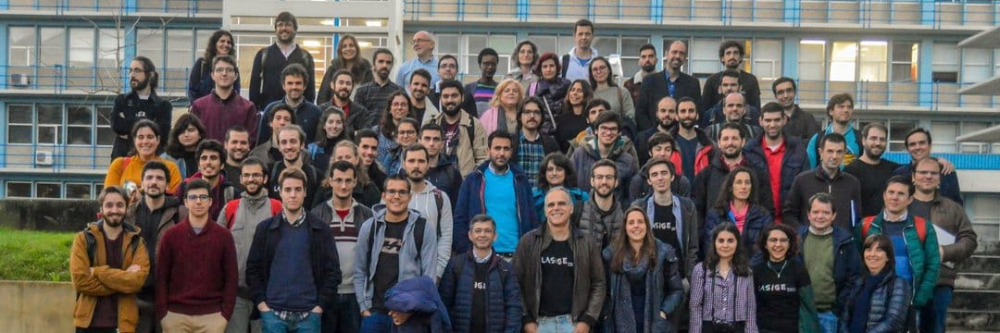
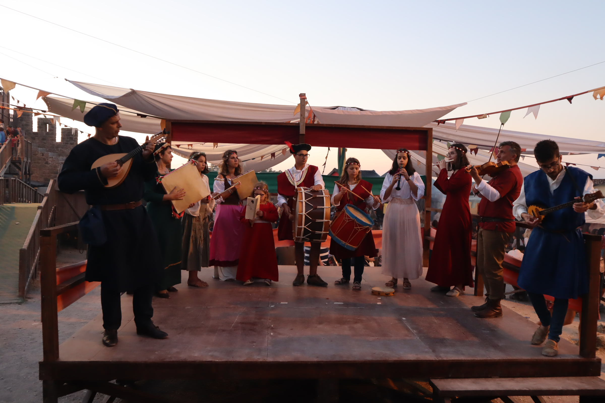
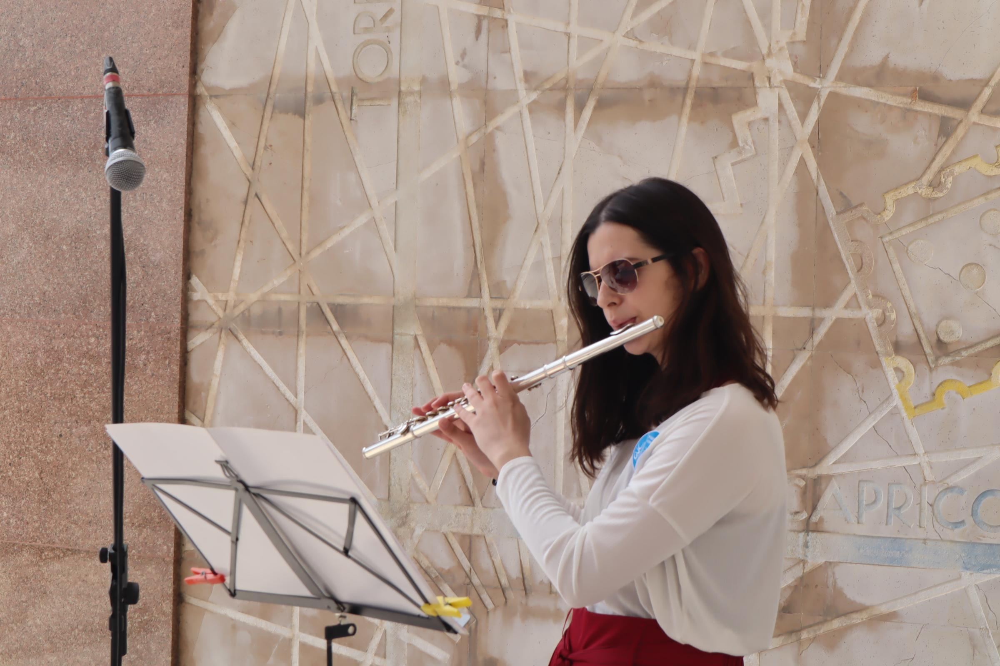

Conference Committees

SPLASH'23 Volunteer Co-Chair
Volunteers are the backbone of conferences, and I was very glad to be co-chairing the volunteering team, where 50 volunteers helped run the SPLASH conference that by itself counted with more than 600 attendees.

Artifact Evaluation Committee
PLDI'23
PLDI 2023 included a Artifact Evaluation Process and counted with more than 80 people in the evaluation committee. As part of the group, I evaluated 3 artifacts to award the badges of functional, reusable and available, helping in the reproducibility of the studies presented in the papers of the research track of the conference.
Outreach, Leadership, and Teamwork

Student Volunteer at multiple conferences
ICSE 2023, POPL 2021, 2022 and 2023
I participated as a student volunteer in multiple conferences in the areas of Software Engineering and Programming Languages. I have helped in both online, hybrid, and totally in-person events, with attendee sizes that range from 400 to more than 1500 participants.

Co-organization of events at LASIGE
Welcome Day 2021 and 2022
I joined the organization committee for the events of LASIGE Welcome Day 2021 and 2022, and organized team-building activities (e.g., paintball, movie nights) to get to know the other researchers better and enhance the sense of community within the research unit.

Board Secretary
Associação Alegres Olhares
I was an elected board member of the non-profit cultural association Alegres Olhares during the mandates of 2019 to 2022. The association organizes and co-organizes cultural projects and events using creativity to take traditional projects to our present day and showcase the city and the country's heritage. Visit our webpage and instagram to learn more.

Music Groups
Noses com Vozes; Banda da SFO
I play the concert flute in several music groups including the Band of the Phillarminic Society of Olhalvo, and the portuguese folk music group Noses com Vozes.
I usually play the transverse flute, but occasionally I also play the piccolo, and I'm a soloist often.
Listen to the Noses com Vozes first album, released 2019, in Spotify.
Participation in Theater Groups
I joined the group of Academic Theater of the Universidade de Lisboa (TUT) in 2019/20, and participated in the group of theater of Faculdade de Ciências da Universidade de Lisboa in 2017. These opportunities for representing and talking in public helped me gain more confidence and learn how to better present my research to wide audiences. For example, they made me value more body language, careful enunciation, and changes in tone.

Participation and organization of Events
I have helped in the coordination of several local events, as a volunteer, and participated in associations of cultural development such as Sociedade Filarmónica Olhalvense and Associação Alegres Olhares. Learning how to coordinate and organize events has helped me understand how big and small organizations have to operate to make events that are both interesting and insightful for different audiences.